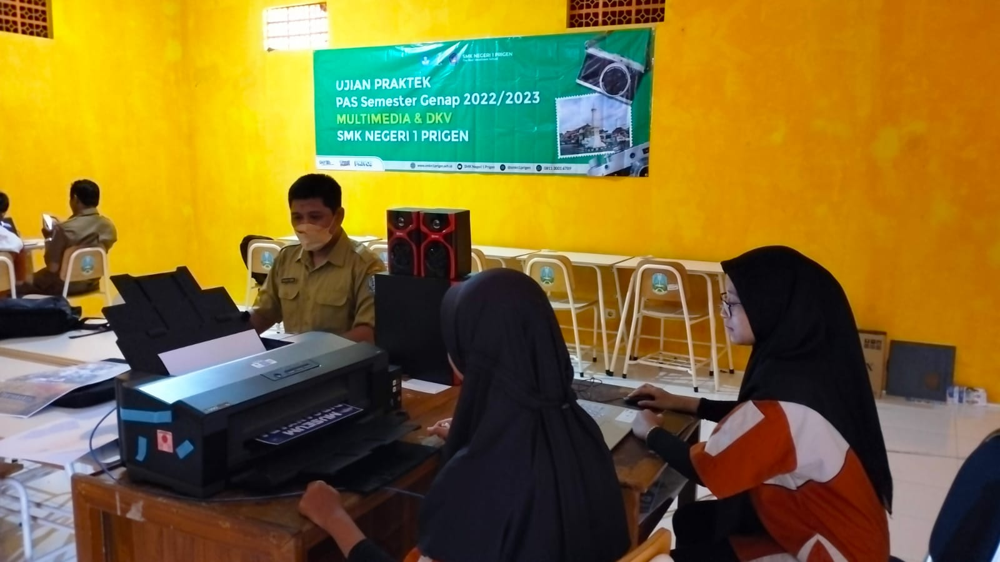

Jurusan multimedia adalah salah satu jurusan Sekolah Menengah Kejuruan pada bidang komputer yang mempelajari tentang penggunaan komputer guna untuk menyajikan data teks, suara, gambar, animasi, dan video yang dibuat semenarik mungkin.
DKV adalah Desain Komunikasi Visual, dan merujuk pada sebuah program studi di perguruan tinggi yang fokus pada pengembangan kreativitas dan kemampuan visual untuk menciptakan karya desain.
